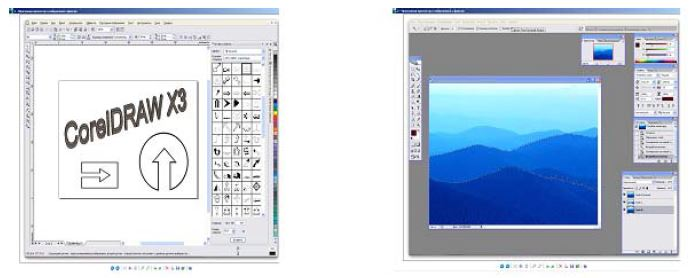

Лекция № 4
Геоинформационные технологии
В настоящее время в соответствии с требованиями новых информационных технологий создаются и функционируют многие системы управления, отображающие информацию на электронной карте:
- геоинформационные системы;
- системы федерального и муниципального управления;
- системы проектирования;
- системы военного назначения и т.д.
Геоинформационная система – это компьютерная информационная система, отображающая информацию на электронной карте. Данные системы являются новейшим классом информационных систем, интенсивно развивающихся в настоящее время. Специалисты предсказывают этим системам большое будущее.
В качестве примера рассмотрим ГИС муниципального управления, т. е. информационную систему большого города. Эта система должна обеспечивать информацией городские власти, органы охраны правопорядка, транспортников, энергетиков, связистов, торговлю, медицинские службы, образование и прочее. Следовательно, соответствующая информационная система, представляющая собой совокупность баз данных и географических карт (схем), причем такая, что каждая база данных привязана к точке на карте и представляет собой муниципальную ГИС.
Системы управления регулируют деятельность технических и социальных систем, функционирующих в некотором операционном пространстве (географическом, экономическом и т.п.) с явно выраженной пространственной природой.
При решении задач социального и технического регулирования в системах управления используется масса пространственной информации: топография, гидрография, инфраструктура, коммуникации, размещение объектов.
Таким образом, геоинформационные технологии предназначены для широкого внедрения в практику методов и средств работы с пространственно-временными данными, представляемыми в виде системы электронных карт, и предметно-ориентированных сред обработки разнородной информации для различных категорий пользователей.
Графическое представление какой-либо ситуации на экране компьютера подразумевает отображение различных графических образов. Сформированный на экране ЭВМ графический образ состоит из двух различных с точки зрения среды хранения частей – графической «подложки» или графического фона и других графических объектов. По отношению к этим другим графическим образам «образ-подложка» является «площадным», или пространственным двухмерным изображением. Основной проблемой при реализации геоинформационных приложений является трудность формализованного описания конкретной предметной области и ее отображения на электронной карте.
Графическая информация, которая хранится в ГИС, не является статической. Она часто подвергается манипуляциям типа «сжать» и «растянуть» и более сложным и поэтому хранится как правило в векторном (а не в растровом) формате. Если исходная карта вводится в компьютер путем сканирования, то первоначальный растровый формат изображения подвергается специальной обработке, называемой векторизацией, т. е, между линиями и точками, составляющими изображение, устанавливаются геометрические и формульные соотношения.
Основным классом данных геоинформационных систем (ГИС) являются координатные данные, содержащие геометрическую информацию и отражающие пространственный аспект. Основные типы координатных данных: точка (узлы, вершины), линия (незамкнутая), контур (замкнутая линия), полигон (ареал, район). На практике для построения реальных объектов используют большее число данных (например, висячий узел, псевдоузел, нормальный узел, покрытие, слой и др.).
Рассмотренные типы данных имеют большее число разнообразных связей, которые можно условно разделить на три группы:
- взаимосвязи для построения сложных объектов из простых элементов;
- взаимосвязи, вычисляемые по координатам объектов;
- взаимосвязи, определяемые с помощью специального описания и семантики при вводе данных.
Векторные и растровые модели
Основой визуального представления данных при использовании ГИС-технологий является графическая среда, основу которой составляют векторные и растровые (ячеистые) модели.
Векторные модели основаны на представлении геометрической информации с помощью векторов, занимающих часть пространства, что требует при реализации меньшего объема памяти. Другим достоинством этих моделей является то, что векторные рисунки могут буть увеличены или уменьшены без потери качества. Это возможно, т. к. изменение размера рисунка производится с помощью простого умножения координат точек графических объектов на коэффициент масштабирования. Используются векторные модели в транспортных, коммунальных, маркетинговых приложениях ГИС.
Эти модели создаются в векторных графических редакторах. Так как векторные модели состоят из отдельных графических объектов, то они легко редактируются (каждый из объектов может быть перемещен, удален, увеличен или уменьшен и т. д.).
Векторными графическими редакторами являются системы компьютерного черчения. Использование систем компьютерного черчения позволяет создавать чертежи с гораздо большей точностью, а также измерять расстояния, углы, периметры и площади начерченных объектов. Векторными графическими редакторами являются также системы автоматизированного проектирования.
Широко распространенным форматом векторных графических файлов является формат WMF, который используется для хранения коллекции графических изображений Microsoft Clip Gallery. Некоторые программы обработки изображений используют оригинальные форматы, которые распознаются только самой создающей программой (например, векторный редактор StarOffice Draw сохраняет файлы в собственном формате SDA.
Мощные векторные графические редакторы содержат конверторы, которые позволяют преобразовывать растровые изображения в векторные рисунки.
В растровых моделях объект (территория) отображается в пространственные ячейки, образующие регулярную сеть. Каждой ячейке растровой модели соответствует одинаковый по размерам, но разный по характеристикам (цвет, плотность) участок поверхности. Ячейка модели характеризуется одним значением, являющимся средней характеристикой участка поверхности. Эта процедура называется пикселизацией. Растровые модели делятся на регулярные, нерегулярные и вложенные (рекурсивные или иерархические) мозаики. Плоские регулярные мозаики бывают трех типов: квадрат, треугольник и шестиугольник. Квадратная форма удобна при обработке больших объемов информации, треугольная – для создания сферических поверхностей. В качестве нерегулярных мозаик используют треугольные сети неправильной формы (Triangulated Irregular Network – TIN) и полигоны Тиссена. Они удобны для создания цифровых моделей отметок местности по заданному набору точек.
Универсальным форматом растровых графических файлов является формат BMP. Растровые графические файлы в этом формате имеют большой информационный объем, так как в них хранятся коды цветов всех точек изображения.
Для размещения изображений на Web-страницах в Интернете используются форматы растровых графических файлов, в которых используется сжатие. В растровом графическом формате GIF используется метод сжатия, который позволяет неплохо сжимать файлы, в которых много одноцветных областей изображения (логотипы, надписи, схемы). Файлы в формате GIF могут содержать не одну, а несколько растровых картинок, которые показываются одна за другой с указанной в файле частотой, чем достигается иллюзия движения (GIF-анимация). Недостатком формата GIF является ограниченная палитра, в которой не может быть больше 256 цветов.
Растровый графический формат PNG использует метод сжатия без потери данных и является усовершенствованным вариантом формата GIF, т. к. позволяет использовать в PNG-палитре до 16 миллионов цветов. При сохранении файлов в этом формате можно указать требуемую степень сжатия на шкале «высокая степень сжатия и плохое качество изображения – низкая степень сжатия и высокое качество изображения».
Для сжатия цифровых и отсканированных фотографий используется формат JPEG. Компьютер обеспечивает воспроизведение более 16 млн различных цветов, тогда как человек вряд ли способен различить более сотни цветов и оттенков. В формате JPEG отбрасывается «избыточное» для человеческого восприятия разнообразие цветов соседних пикселей. Применение этого формата позволяет сжимать файлы в десятки раз, однако приводит к необратимой потере информации (файлы не могут быть восстановлены в первоначальном виде).
Процедуры создания графических образов в растровом и векторном редакторах практически одинаковы, однако существенно различаются результаты рисования. В растровом графическом редакторе созданный объект перестает существовать как самостоятельный элемент в конце процесса создания и становится лишь группой пикселей на рисунке. В векторном редакторе этот объект продолжает сохранять свою индивидуальность, и можно его копировать, перемещать, изменять его размеры, цвет и прозрачность.
Примеры графических редакторов изображены на рис. 1.

Рис. 1. Графические редакторы: векторный и растровый
Таким образом, векторная модель содержит информацию о местоположении объекта, а растровая о том, что расположено в той или иной точке объекта. Векторные модели относятся к бинарным или квазибинарным. Растровые позволяют отображать полутона. Основной областью использования растровых моделей является обработка аэрокосмических снимков.
Цифровая карта может быть организована в виде множества слоев (покрытий или карт подложек). Слои в ГИС представляют набор цифровых картографических моделей, построенных на основе объединения (типизации) пространственных объектов, имеющих общие функциональные признаки. Совокупность слоев образует интегрированную основу графической части ГИС.
Важным моментом при проектировании ГИС является размерность модели. Применяют двухмерные модели координат (2D) и трехмерные (3D). Двухмерные модели используются при построении карт, а трехмерные – при моделировании геологических процессов, проектировании инженерных сооружений (плотин, водохранилищ, карьеров и др.), моделировании потоков газов и жидкостей. Существуют два типа трехмерных моделей: псевдотрехмерные, когда фиксируется третья координата и истинные трехмерные.
Назначение и основные области использования ГИС
Большинство современных ГИС осуществляет комплексную обработку информации:
- сбор первичных данных;
- накопление и хранение информации;
- различные виды моделирования (семантическое, имитационное, геометрическое, эвристическое);
- автоматизированное проектирование;
- документационное обеспечение.
Основные области использования ГИС:
- электронные карты;
- городское хозяйство;
- государственный земельный кадастр;
- экология;
- дистанционное зондирование;
- экономика;
- специальные системы военного назначения.
Технологии защиты информации
Наряду с позитивным влиянием на все стороны человеческой деятельности широкое внедрение информационных технологий привело к появлению новых угроз безопасности людей. Это связано с тем обстоятельством, что информация, создаваемая, хранимая и обрабатываемая средствами вычислительной техники, стала определять действия большей части людей и технических систем. В связи с этим резко возросли возможности нанесения ущерба, связанные с хищением информации, так как воздействовать на любую систему (социальную, биологическую или техническую) с целью ее уничтожения, снижения эффективности функционирования или воровства ее ресурсов (денег, товаров, оборудования) возможно только в том случае, когда известна информация о ее структуре и принципах функционирования.
Все виды информационных угроз можно разделить на две большие группы:
- отказы и нарушения работоспособности программных и технических средств;
- преднамеренные угрозы, заранее планируемые злоумышленниками для нанесения вреда.
Выделяют следующие основные группы причин сбоев и отказов в работе компьютерных систем:
- нарушения физической и логической целостности хранящихся в оперативной и внешней памяти структур данных, возникающие по причине старения или преждевременного износа их носителей;
- нарушения, возникающие в работе аппаратных средств из-за их старения или преждевременного износа;
- нарушения физической и логической целостности хранящихся в оперативной и внешней памяти структур данных, возникающие по причине некорректного использования компьютерных ресурсов;
- нарушения, возникающие в работе аппаратных средств из-за неправильного использования или повреждения, в том числе из-за неправильного использования программных средств;
- неустраненные ошибки в программных средствах, не выявленные в процессе отладки и испытаний, а также оставшиеся в аппаратных средствах после их разработки.
Помимо естественных способов выявления и своевременного устранения указанных выше причин используют следующие специальные способы защиты информации от нарушений работоспособности компьютерных систем:
- внесение структурной, временной, информационной и функциональной избыточности компьютерных ресурсов;
- защита от некорректного использования ресурсов компьютерной системы;
- выявление и своевременное устранение ошибок на этапах разработки программно-аппаратных средств.
Структурная избыточность компьютерных ресурсов достигается за счет резервирования аппаратных компонентов и машинных носителей данных, организации замены отказавших и своевременного пополнения резервных компонентов. Структурная избыточность составляет основу остальных видов избыточности.
Внесение информационной избыточности выполняется путем периодического или постоянного (фонового) резервирования данных на основных и резервных носителях. Зарезервированные данные обеспечивают восстановление случайно или преднамеренно уничтоженной и искаженной информации. Для восстановления работоспособности компьютерной системы после появления устойчивого отказа кроме резервирования обычных данных следует заблаговременно резервировать и системную информацию, а также подготавливать программные средства восстановления.
Функциональная избыточность компьютерных ресурсов достигается дублированием функций или внесением дополнительных функций в программно-аппаратные ресурсы вычислительной системы для повышения ее защищенности от сбоев и отказов, например периодическое тестирование и восстановление, а также самотестирование и самовосстановление компонентов компьютерной системы.
Защита от некорректного использования информационных ресурсов заключается в корректном функционировании программного обеспечения с позиции использования ресурсов вычислительной системы. Программа может четко и своевременно выполнять свои функции, но некорректно использовать компьютерные ресурсы из-за отсутствия всех необходимых функций (например, изолирование участков оперативной памяти для операционной системы и прикладных программ, защита системных областей на внешних носителях, поддержка целостности и непротиворечивости данных).
Выявление и устранение ошибок при разработке программно-аппаратных средств достигается путем качественного выполнения базовых стадий разработки на основе системного анализа концепции, проектирования и реализации проекта.
Однако основным видом угроз целостности и конфиденциальности информации являются преднамеренные угрозы, заранее планируемые злоумышленниками для нанесения вреда. Их можно разделить на две группы:
- угрозы, реализация которых выполняется при постоянном участии человека;
- угрозы, реализация которых после разработки злоумышленником соответствующих компьютерных программ выполняется этими программами без непосредственного участия человека.
Задачи по защите от угроз каждого вида одинаковы:
- запрещение несанкционированного доступа к ресурсам вычислительных систем;
- невозможность несанкционированного использования компьютерных ресурсов при осуществлении доступа;
- своевременное обнаружение факта несанкционированных действий, устранение их причин и последствий.
Основным способом запрещения несанкционированного доступа к ресурсам вычислительных систем является подтверждение подлинности пользователей и разграничение их доступа к информационным ресурсам, включающего следующие этапы:
- идентификация;
- установление подлинности (аутентификация);
- определение полномочий для последующего контроля и разграничения доступа к компьютерным ресурсам.
Идентификация необходима для указания компьютерной системе уникального идентификатора обращающегося к ней пользователя. Идентификатор может представлять собой любую последовательность символов и должен быть заранее зарегистрирован в системе администратора службы безопасности. В процессе регистрации заносится следующая информация:
- фамилия, имя, отчество (при необходимости другие характеристики пользователя);
- уникальный идентификатор пользователя;
- имя процедуры установления подлинности;
- эталонная информация для подтверждения подлинности (например, пароль);
- ограничения на используемую эталонную информацию (например, время действия пароля);
- полномочия пользователя по доступу к компьютерным ресурсам.
Установление подлинности (аутентификация) заключается в проверке истинности полномочий пользователя.
Для особо надежного опознания при идентификации используются технические средства, определяющие индивидуальные характеристики человека (голос, отпечатки пальцев, структура зрачка). Наиболее массово используемыми являются парольные методы проверки подлинности пользователей. Пароли можно разделить на две группы: простые и динамически изменяющиеся.
Простой пароль не изменяется от сеанса к сеансу в течение установленного периода его существования.
Во втором случае пароль изменяется по правилам, определяемым используемым методом. Выделяют следующие методы реализации динамически изменяющихся паролей:
- методы модификации простых паролей. Например, случайная выборка символов пароля и одноразовое использование паролей;
- метод «запрос – ответ», основанный на предъявлении пользователю случайно выбираемых запросов из имеющегося массива;
- функциональные методы, основанные на использовании некоторой функции F с динамически изменяющимися параметрами (дата, время, день недели и др.), с помощью которой определяется пароль.
Для защиты от несанкционированного входа в компьютерную систему используются как общесистемные, так и специализированные программные средства защиты.
После идентификации и аутентификации пользователя система защиты должна определить его полномочия для последующего контроля санкционированного доступа к компьютерным ресурсам (разграничение доступа). В качестве компьютерных ресурсов рассматриваются:
- программы;
- внешняя память (файлы, каталоги, логические диски);
- информация, разграниченная по категориям в базах данных;
- оперативная память;
- время (приоритет) использования процессора;
- порты ввода-вывода;
- внешние устройства.
Различают следующие виды прав пользователей по доступу к ресурсам:
- всеобщее (полное предоставление ресурса);
- функциональное или частичное;
- временное.
Наиболее распространенными способами разграничения доступа являются:
- разграничение по спискам (пользователей или ресурсов);
- использование матрицы установления полномочий (строки матрицы – идентификаторы пользователей, столбцы – ресурсы компьютерной системы);
- разграничение по уровням секретности и категориям (например, общий доступ, конфиденциально, секретно);
- парольное разграничение.
Защита информации от исследования и копирования предполагает криптографическое закрытие защищаемых от хищения данных. Задачей криптографии является обратимое преобразование некоторого понятного исходного текста (открытого текста) в кажущуюся случайной последовательность некоторых знаков, часто называемых шифротекстом, или криптограммой. В шифре выделяют два основных элемента – алгоритм и ключ. Алгоритм шифрования представляет собой последовательность преобразований обрабатываемых данных, зависящих от ключа шифрования. Ключ задает значения некоторых параметров алгоритма шифрования, обеспечивающих шифрование и дешифрование информации. В криптографической системе информация I и ключ К являются входными данными для шифрования и дешифрования информации. При похищении информации необходимо знать ключ и алгоритм шифрования.
По способу использования ключей различают два типа криптографических систем: симметрические и асимметрические.
В симметрических (одноключевых) криптографических системах ключи шифрования и дешифрования либо одинаковы, либо легко выводятся один из другого.
В асимметрических (двухключевых или системах с открытым ключом) криптографических системах ключи шифрования и дешифрования различаются таким образом, что с помощью вычислений нельзя вывести один ключ из другого.
Скорость шифрования в двухключевых криптографических системах намного ниже, чем в одноключевых. Поэтому асимметрические системы используют в двух случаях:
- для шифрования секретных ключей, распределенных между пользователями вычислительной сети;
- для формирования цифровой подписи.
Одним из сдерживающих факторов массового применения методов шифрования является потребление значительных временных ресурсов при программной реализации большинства хорошо известных шифров (DES, FEAL, REDOC, IDEA, ГОСТ).
Одной из основных угроз хищения информации является угроза доступа к остаточным данным в оперативной и внешней памяти компьютера. Под остаточной информацией понимают данные, оставшиеся в освободившихся участках оперативной и внешней памяти после удаления файлов пользователя, удаления временных файлов без ведома пользователя, находящиеся в неиспользуемых хвостовых частях последних кластеров, занимаемых файлами, а также в кластерах, освобожденных после уменьшения размеров файлов и после форматирования дисков.
Основным способом защиты от доступа к конфиденциальным остаточным данным является своевременное уничтожение данных в следующих областях памяти компьютера:
- в рабочих областях оперативной и внешней памяти, выделенных пользователю, после окончания им сеанса работы;
- в местах расположения файлов после выдачи запросов на их удаление.
Уничтожение остаточных данных может быть реализовано либо средствами операционных сред, либо с помощью специализированных программ. Использование специализированных программ (автономных или в составе системы защиты) обеспечивает гарантированное уничтожение информации.
Подсистема защиты от компьютерных вирусов (специально разработанных программ для выполнения несанкционированных действий) является одним из основных компонентов системы защиты информации и процесса ее обработки в вычислительных системах.
Выделяют три уровня защиты от компьютерных вирусов:
- защита от проникновения в вычислительную систему вирусов известных типов;
- углубленный анализ на наличие вирусов известных и неизвестных типов, преодолевших первый уровень защиты;
- защита от деструктивных действий и размножения вирусов, преодолевших первые два уровня.
Поиск и обезвреживание вирусов осуществляются как автономными антивирусными программными средствами (сканеры), так и в рамках комплексных систем защиты информации.
Среди транзитных сканеров, которые загружаются в оперативную память, наибольшей популярностью в нашей стране пользуются антивирусные программы Aidstest Дмитрия Лозинского и DrWeb Игоря Данилова. Эти программы просты в использовании и для детального ознакомления с руководством по каждой из них следует прочитать файл, поставляемый вместе с антивирусным средством.
Широкое внедрение в повседневную практику компьютерных сетей, их открытость, масштабность делают проблему защиты информации исключительно сложной. Выделяют две базовые подзадачи:
- обеспечение безопасности обработки и хранения информации в каждом из компьютеров, входящих в сеть;
- защита информации, передаваемой между компьютерами сети.
Решение первой задачи основано на многоуровневой защите автономных компьютерных ресурсов от несанкционированных и некорректных действий пользователей и программ, рассмотренных выше.
Безопасность информации при сетевом обмене данными требует также обеспечения их конфиденциальности и подлинности. Защита информации в процессе передачи достигается на основе защиты каналов передачи данных, а также криптографического закрытия передаваемых сообщений. В идеальном случае защита каналов передачи данных должна обеспечивать их защиту как от нарушений работоспособности, так и несанкционированных действий (например подключения к линиям связи). По причине большой протяженности каналов связи, а также возможной доступности их отдельных участков (например при беспроводной связи) защита каналов передачи данных от несанкционированных действий экономически неэффективна, а в ряде случаев невозможна. Поэтому реально защита каналов передачи данных строится на основе защиты нарушений их работоспособности.
Международное признание для защиты передаваемых сообщений получила программная система PGP (Pretty Good Privacy – очень высокая секретность), разработанная в США и объединяющая асимметричные и симметричные шифры. Являясь самой популярной программной криптосистемой в мире.